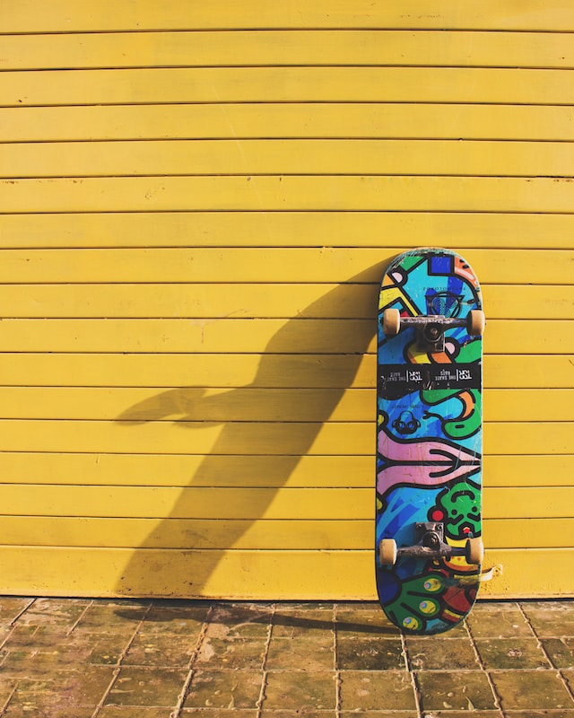
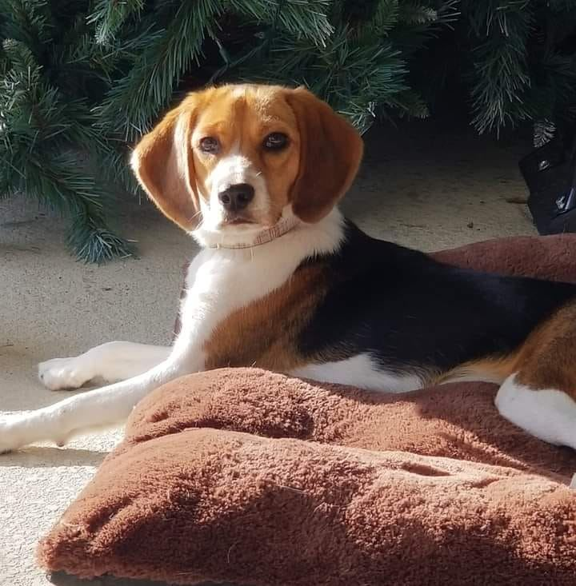

I'm Tyler.
a programmer.

I am a Front-End Web Developer based out of Lakeland, Florida. When i started my working career in 2005 at a young age i updated and maintained 4 different websites for 7 years. The companies main website was a very basic design using HTML and CSS. I've spent over 10 years in the car business and eventually switched careers paths to the printing industry where i became a successful Graphic Artist in the world of Bindery. After a very long hiatus away from my true passion, i somehow found my way back to designing and developing websites. I've become obsessed with the things we can do today compared to 2005. Wow! What a huge difference.
 I'm a professional at my craft. I will take your
personalized design and make it a reality for the world to
see. From wireframes to deployment if you can think it, i can build it with today's latest technologies.
I'm a professional at my craft. I will take your
personalized design and make it a reality for the world to
see. From wireframes to deployment if you can think it, i can build it with today's latest technologies.
Your website will be responsive and viewable from cell phones, tablets, laptops and large desktop screens. Lets work together.
I have been skateboarding for 17 years. In my younger years i was sponsored by a local board company based out of Detroit, Michigan. This gave me the opportunity to travel and see many different parts of the U.S.
I will forever be grateful for skateboarding, it has molded me into the person i am today. Its my meditation from the everyday stresses of life, it keeps me grounded, and it's great exercise!
This is my dog Daisy. She is a 100% purebred Beagle. There are two types of Beagles. There are Beagles that don't exceed 13 inches in height at the shoulder and beagles that stand 13-15 inches in height at he shoulder. Daisy is 14 inches at the shoulder. She has a very wild personality and loves attention.
Feel free to contact me with your design and development needs. Or we can hit up the local dog park with our pups!
CONTACT ME